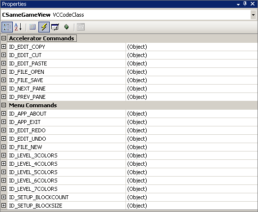
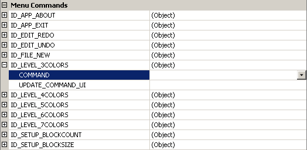
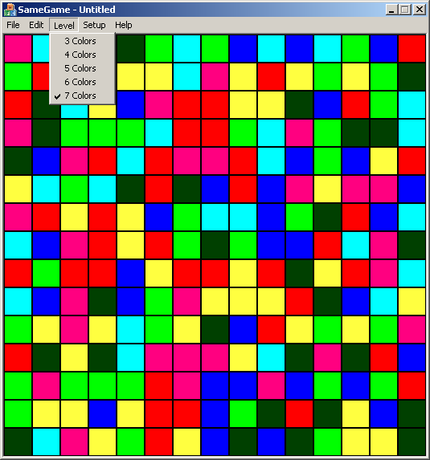

"The Same Game" - A Simple Game from Start to Finish
"The Same Game" - A Simple Game from Start to Finish
By: Ben Marchant
Levels of Difficulty
Now we'll focus on the Level menu and the options that we added. Once
we've added the menu options we can compile and run the game and see that the
menus have been added but they still don't do anything.
When you click on a menu option the program fires an event indicating which menu option was selected. We just need to catch that event with an event handler. It is very similar to the event handlers that we discussed and used in the previous article. Really the only difference is where we find the events for the menu options. We start from the properties window of the CSameGameView and click on the "Events" button (lightning bolt). Once you click on that you'll see the following.

You can see in the Menu Commands section a list of all of the menu items that we entered. The entries are in the format ID_<MENU>_<OPTION> where <MENU> is the menu name and <OPTION> is the text from the menu option. Expand the plus next to the ID_LEVEL_3COLORS option and you'll see two options under it, COMMAND and UPDATE_COMMAND_UI. The COMMAND option is the event handler for the actual event of selecting the menu option. The UPDATE_COMMAND_UI is a handy little event that allows us to change the state of the menu option. By state I mean enable/disable or check/uncheck the menu option. In our menu, we are going to put a check by the level that we've selected.

Click the down arrow in the dropdown for COMMAND and select "Add" (to get the down arrow in the first place, click anywhere on the row). We want to do this for UPDATE_COMMAND_UI also. Go ahead and do it for all of the color options (you may have to go back to the properties dialog after adding each one). Once you've done this we are ready to start adding code.
We'll start with the game board, go to the document and finish with the view. In the header file SameGameBoard.h add a new data member to keep track of the number of colors below the m_nRemaining variable.
/* Number of colors */
int m_nColors;
We also need to add two functions to get and set the number of colors. Add them to the public section right below the DeleteBlocks function.
/* Functions to get and set the number of colors */
int GetNumColors(void) { return m_nColors; }
void SetNumColors(int nColors)
{ m_nColors = (nColors %gt;= 3 && nColors <= 7) ? nColors : m_nColors; }
The SetNumColors function restricts the value set to a number between three and seven, just like our menu options. Since we are adding more colors we need to update the m_arrColors array to make it larger (changes bolded).
/* List of colors, 0 is background and 1-7 are piece colors */
static COLORREF m_arrColors[8];
Now in the source file for the game board we need to update a few of the functions and the color array. Of course we need to update the constructor to initialize the number of colors to three (changes bolded).
COLORREF CSameGameBoard::m_arrColors[8];
CSameGameBoard::CSameGameBoard(void)
: m_arrBoard(NULL),
m_nColumns(15), m_nRows(15),
m_nHeight(35), m_nWidth(35),
m_nRemaining(0), m_nColors(3)
{
m_arrColors[0] = RGB( 0, 0, 0);
m_arrColors[1] = RGB(255, 0, 0);
m_arrColors[2] = RGB(255,255, 64);
m_arrColors[3] = RGB( 0, 0,255);
m_arrColors[4] = RGB( 0,255, 0);
m_arrColors[5] = RGB( 0,255,255);
m_arrColors[6] = RGB(255, 0,128);
m_arrColors[7] = RGB( 0, 64, 0);
// Create and setup the board
SetupBoard();
}
The only other change we need to make is in the SetupBoard. Previously, we hard-coded the number of colors to 3 in the setup. Now, we need to change the number three to m_nColors where we mod the random number like below (changes bolded).
void CSameGameBoard::SetupBoard(void)
{
// Create the board if needed
if(m_arrBoard == NULL)
CreateBoard();
// Randomly set each square to a color
for(int row = 0; row < m_nRows; row++)
for(int col = 0; col < m_nColumns; col++)
m_arrBoard[row][col] = (rand() % m_nColors) + 1;
// Set the number of spaces remaining
m_nRemaining = m_nRows * m_nColumns;
}
Now we will move on to the document. We need to add functions so that the view can change the number of colors. The GetNumColors function is a simple function that we can complete in the header file. Add the following lines of code in the public section of the document in SameGameDoc.h.
int GetNumColors() { return m_board.GetNumColors(); }
void SetNumColors(int nColors);
In the source file we'll add the implementation of the SetNumColors function. Here we can't just call the SetNumColors function on the game board by itself. We need to then reset the game board to add in the new colors.
void CSameGameDoc::SetNumColors(int nColors)
{
// Set the number of colors first
m_board.SetNumColors(nColors);
// Then reset the game board
m_board.SetupBoard();
}
That is all that we need in the document. Of course, since we haven't changed the view, we can't yet use these functions. The view is the last thing that needs to be updated, though. By adding the event handlers you'll get the following functions inserted into the header file.
/* Functions to change the difficulty level */
afx_msg void OnLevel3colors();
afx_msg void OnLevel4colors();
afx_msg void OnLevel5colors();
afx_msg void OnLevel6colors();
afx_msg void OnLevel7colors();
/* Functions to update the menu options */
afx_msg void OnUpdateLevel3colors(CCmdUI *pCmdUI);
afx_msg void OnUpdateLevel4colors(CCmdUI *pCmdUI);
afx_msg void OnUpdateLevel5colors(CCmdUI *pCmdUI);
afx_msg void OnUpdateLevel6colors(CCmdUI *pCmdUI);
afx_msg void OnUpdateLevel7colors(CCmdUI *pCmdUI);
You'll notice a couple of things in these prototypes that you've never seen before. The afx_msg designation specifies that the function is an event handler. The OnUpdate functions use a pointer to a CCmdUI object. We'll talk about this but it is the way that we enable/disable, check/uncheck a menu option. In the source file you'll see some other code that has been added (changes bolded).
BEGIN_MESSAGE_MAP(CSameGameView, CView)
ON_WM_LBUTTONDOWN()
ON_WM_ERASEBKGND()
ON_COMMAND(ID_LEVEL_3COLORS, &CSameGameView::OnLevel3colors)
ON_COMMAND(ID_LEVEL_4COLORS, &CSameGameView::OnLevel4colors)
ON_COMMAND(ID_LEVEL_5COLORS, &CSameGameView::OnLevel5colors)
ON_COMMAND(ID_LEVEL_6COLORS, &CSameGameView::OnLevel6colors)
ON_COMMAND(ID_LEVEL_7COLORS, &CSameGameView::OnLevel7colors)
ON_UPDATE_COMMAND_UI(ID_LEVEL_3COLORS,
&CSameGameView::OnUpdateLevel3colors)
ON_UPDATE_COMMAND_UI(ID_LEVEL_4COLORS,
&CSameGameView::OnUpdateLevel4colors)
ON_UPDATE_COMMAND_UI(ID_LEVEL_5COLORS,
&CSameGameView::OnUpdateLevel5colors)
ON_UPDATE_COMMAND_UI(ID_LEVEL_6COLORS,
&CSameGameView::OnUpdateLevel6colors)
ON_UPDATE_COMMAND_UI(ID_LEVEL_7COLORS,
&CSameGameView::OnUpdateLevel7colors)
END_MESSAGE_MAP()
The message map is a list of C++ macros that associate an event with an event handler. Take some time to look it over but since it is automatically generated you won't need to edit it. All of the OnLevel*colors functions are going to be all very similar to the following function.
void CSameGameView::OnLevel3colors()
{
// First get a pointer to the document
CSameGameDoc* pDoc = GetDocument();
ASSERT_VALID(pDoc);
if(!pDoc)
return;
// Set the number of colors
pDoc-%gt;SetNumColors(3);
// Force the view to redraw
Invalidate();
UpdateWindow();
}
In all of the view functions we need to get a pointer to the document.
Then we set the number of colors to the number in the name of the function,
i.e. OnLevel3colors calls SetNumColors(3) and so on. Finally we need to
force the view to redraw. Repeat this for all of the event handlers for
the menu options. With all of these functions done, compile it and test
it out. You'll see the number of colors change from three to four and so
on. (You might also consider creating a helper function that does all of
the work and takes the number of colors as an argument.) Then you can make code like this:
In the header SameGameView.h, you'd add this helper:
void setColorCount(int numColors);
In SameGameView.cpp, you'd add this code:
void CSameGameView::setColorCount(int numColors)
{
// First get a pointer to the document
CSameGameDoc* pDoc = GetDocument();
ASSERT_VALID(pDoc);
if(!pDoc)
return;
// Set the number of colors
pDoc-%gt;SetNumColors(numColors);
// Force the view to redraw
Invalidate();
UpdateWindow();
}
void CSameGameView::OnLevel3colors()
{
setColorCount(3);
}
Now back to the final set of event handlers. The ON_UPDATE_COMMAND_UI event handlers are called when the menu is pulled down by the user, one for each menu option. We'll use the SetCheck function from the CCmdUI object to set and unset the check box next to the level. We start with our boiler-plate code to get a pointer to the document and then set the check based on the number of colors in the board.
void CSameGameView::OnUpdateLevel3colors(CCmdUI *pCmdUI)
{
// First get a pointer to the document
CSameGameDoc* pDoc = GetDocument();
ASSERT_VALID(pDoc);
if(!pDoc)
return;
// Set the check if this is the right level
pCmdUI-%gt;SetCheck(pDoc-%gt;GetNumColors() == 3);
}
Again, these functions are all the same except for the number that we are comparing the result of GetNumColors against (you can implement this by writing a helper function here as well, if you like). All five of these functions are called when the Level menu is displayed to set or unset the check mark. Now your game should look something like this.

Conclusion
In this article we've made our game a little more interesting by adding four new levels of difficulty. We learned about the menu editor and how to setup menus. We also setup the event handlers for both ON_COMMAND and ON_COMMAND_UPDATE_UI types of events for menus. In our next article we'll add new options to set the number and size of the blocks in the game board.
Source Code from Part 3
Continue to Part 4: Adjusting the Board Size and Block Count